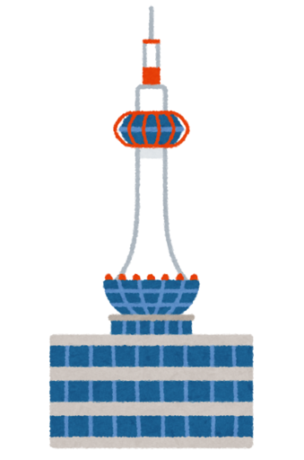
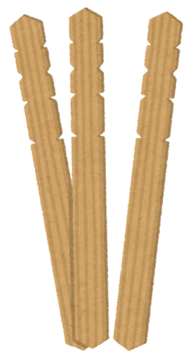
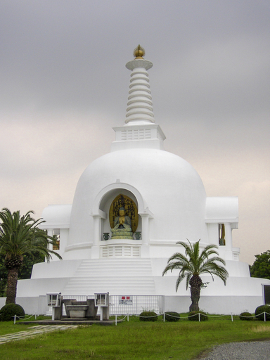
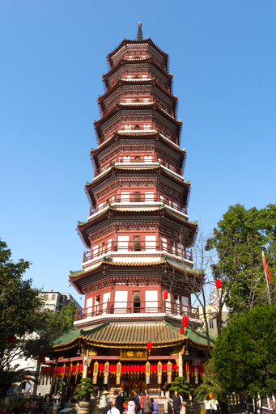
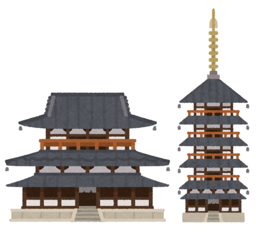

今日の話の後半は裏付けを取れておらず、信憑性が不明で、嘘八百なのかもしれないので、話半分で聞いてください。
JR 京都駅に降り立ち、駅の北側に出ると、こういうものが目に入ります。
京都人のみならず、近畿地方人にはおなじみの京都タワーです。でも今日の話は京都タワーの話ではなく (京都タワーも含まれますけど)、タワー、すなわち “塔” のお話です。
なんでこんなテキストを書きたくなったのかというと、こいつです。
なんでこれが関係するのか？と思われるのでしょうが、近年になって知ったのです。実はこれは塔を模したものなのだということを。
お墓の管理を引き継いでいたり、お盆を含めて法事の際に家にお寺さんに来ていただいているようなご家庭の場合ご存知だと思うのですが、この (多くの場合) 木でできた長い棒状のものを卒塔婆 (そとば) または宗派によっては塔婆 (とうば) といいます。
我が家にもお寺さんに来ていただいてお経をあげていただくことがあるのですが、予め法要の前にお寺さんから我が家に仏壇に収まるようなサイズの小さな卒塔婆が送られてきます。
それで法要の後で、妻が前々からこれがなんなのか？という疑問を持っていたのでしょう、お寺さんにこれが何なのか？という質問をしたのですね。
それでお寺さんがおっしゃったのです。これは実は塔を模したものなんですよ、と。
お寺さんのおっしゃる塔というのは、単に塔の形状をした建築物というだけの意味ではないんですね。ここで言う塔というのは仏舎利塔のことを指します。
むかしむかしお釈迦さんが涅槃に入られたときに荼毘にふされたわけですが、そのお釈迦さんのお骨を収めるために作られた塔のこと日本では仏舎利塔といいます。仏舎利塔のことを単に仏塔と呼ぶ場合もあります。
お釈迦さんが亡くなったあと、遺骨は 8 つに分けられ、８つの地方に建立されたのが仏舎利塔の始まりとされています。現在では仏教が信仰されてるいろんな国に山のようにあります。
これまで仏舎利塔と書いてきましたが、この仏舎利塔のことをもともとはサンスクリット語やパーリ語でストゥーパ、またはトゥーパといいます。このストゥーパやトゥーパに漢字を当てたのが卒塔婆や塔婆になります。漢字を当てたのは後に仏教が伝播した中国で、ということになります。
このストゥーパ、卒塔婆ですが、中国でも作られ、オリジナルから独自の形状になっていきました。Weikimedia Commons から引用します。
画像の塔が仏舎利塔には見えず単に観光施設かお土産屋にしか見えないのですが、ともかく中国では卒塔婆はこのような姿になっていきました。
どうもネットで見る限り卒塔婆の “塔” という文字を取り出して、卒塔婆のような建築物を塔と呼ぶようになったらしいのですね。
それでこれらの塔が、仏教を広めようと力を入れていた蘇我氏と聖徳太子の時代にやってきて、日本のあちこちに建立されたのが五重塔 (五段に限らないそうですが) だそうです。
そして時代を経るに従って、塔のような尖ったような形状の建物全般を “塔” と呼ぶようになった、ということらしいです。
なので厳密に言うと “塔” と “タワー” は異なるもの、ということなのかも知れませんが、京都タワーもなんとなく仏教的なフォルムをしているような気がします。知らんけど。
{kind=link}